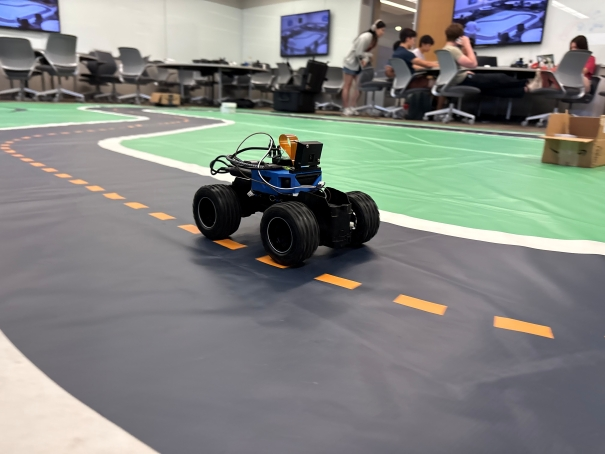

What is DeepPiCar?
DeepPicar is a low-cost autonomous RC car platform using a deep convolutional neural network (CNN). DeepPicar is a small scale replication of NVIDIA's real self-driving car called DAVE-2, which drove on public roads using a CNN. DeepPicar uses the same CNN architecture of NVIDIA's DAVE-2 and can drive itself in real-time locally on a Raspberry Pi.
